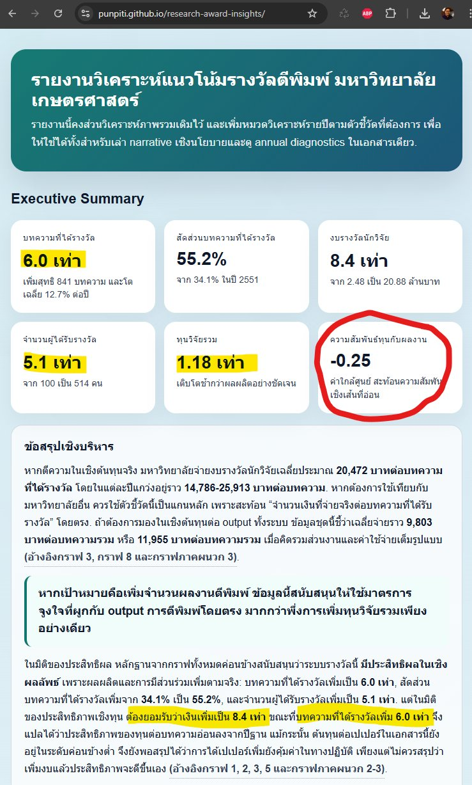

รางวัลตีพิมพ์สัมพันธ์กับจำนวนบทความ แต่ข้อมูลต้องถูกอ่านอย่างระวัง
{kind=link}

รายงานแนวโน้มรางวัลตีพิมพ์ของมหาวิทยาลัยเกษตรศาสตร์ทำให้เห็นภาพที่น่าสนใจมากกว่าตัวเลขรางวัลหรือจำนวนบทความแบบแยกส่วน เพราะเมื่อนำข้อมูลหลายชุดมาวางเทียบกัน ทั้งเงินรางวัลตีพิมพ์ เงินรางวัลอาจารย์และส่วนงาน เงินดำเนินงาน จำนวนนักวิจัยที่ได้รับรางวัล และทุนวิจัยรวม จะเริ่มเห็นว่าความสัมพันธ์ระหว่าง input กับ output ไม่ได้ตรงไปตรงมาอย่างที่มักเข้าใจกัน
ข้อค้นพบสำคัญคือ ทุนวิจัยรวมไม่ได้แปลตรงเป็นจำนวนบทความ แต่รางวัลตีพิมพ์มีความสัมพันธ์กับจำนวนบทความค่อนข้างชัด ในช่วงข้อมูลที่วิเคราะห์ output โตประมาณ 6 เท่า ขณะที่เงินรางวัลโตประมาณ 8.4 เท่า แต่ efficiency ต่อเงิน ไม่ได้ดีขึ้นตาม นี่จึงไม่ใช่แค่เรื่องเงินมากหรือน้อย แต่เป็นเรื่องวิธีอ่านข้อมูลและวิธีออกแบบนโยบายจากข้อมูลนั้น
สิ่งที่ต้องระวังคือข้อมูลชุดนี้ไม่ได้บอกว่ารางวัลเป็นสาเหตุโดยตรงของจำนวนบทความทั้งหมด เพราะสิ่งที่เห็นคือความพ้องกัน หรือ correlation ไม่ใช่ความเป็นเหตุและผลหรือ causation การอ่านข้อมูลเชิงนโยบายจึงต้องไม่รีบแปลงกราฟให้กลายเป็นข้อสรุปแบบง่าย ๆ ว่าเพิ่มเงินแล้ว output จะเพิ่มแน่นอน หรือถ้าตัดเงินแล้ว output จะไม่กระทบเลย
ข้อมูลที่ดีไม่ได้ตอบแทนการคิด แต่ทำให้เราถามคำถามที่คมขึ้น
คุณค่าของรายงานลักษณะนี้อยู่ที่การทำให้ผู้บริหารเห็นโครงสร้างของปัญหาและตั้งคำถามต่อได้ดีขึ้น เช่น เงินที่จ่ายไปสัมพันธ์กับ output แบบใด กลุ่มใดตอบสนองต่อ incentive แบบใด ส่วนใดเป็นผลจากแรงจูงใจจริง และส่วนใดอาจเกิดจากปัจจัยอื่น เช่น วัฒนธรรมวิจัย คุณภาพระบบสนับสนุน ภาระงาน หรือโครงสร้างการประเมิน
ถ้าข้อมูลถูกใช้เพียงเพื่อยืนยันความเชื่อเดิม ระบบก็จะได้แค่คำตอบเดิมในรูปแบบที่ดูมีตัวเลขรองรับ แต่ถ้าใช้ข้อมูลเพื่อท้าทายสมมติฐานเดิม ข้อมูลจะกลายเป็นเครื่องมือเปิดพื้นที่สนทนาที่ตรงขึ้นและรับผิดชอบมากขึ้น
การตัดหรือเพิ่มงบต้องมีเหตุผลที่แข็งแรงกว่าความรู้สึก
เมื่อยอมรับว่าความสัมพันธ์ที่เห็นยังไม่ใช่ causation การตัดสินใจเรื่องงบประมาณก็ต้องระมัดระวังมากขึ้น หากจะเพิ่มงบ ต้องรู้ว่ากลไกใดทำให้เงินแปลงเป็นผลลัพธ์ได้จริง และหากจะตัดงบ ก็ต้องมีเหตุผลที่แข็งแรงพอ ไม่ใช่อาศัยเพียงข้ออ้างว่าเพราะยังพิสูจน์เหตุและผลไม่ได้จึงตัดได้โดยไม่มีผลกระทบ
ประเด็นสำคัญจึงไม่ใช่การปกป้องงบเดิมหรือเรียกร้องงบเพิ่มแบบอัตโนมัติ แต่คือการออกแบบระบบสนับสนุนงานวิจัยที่รู้ว่าตัวเองกำลังจูงใจอะไร วัดอะไร และยอมรับ trade-off แบบไหน
การมีข้อมูลเป็นแค่จุดเริ่มต้น วิธีใช้ข้อมูลต่างหากที่สร้างความต่าง
ทุกองค์กรสามารถมีข้อมูลได้ แต่ไม่ใช่ทุกองค์กรจะใช้ข้อมูลเพื่อเปลี่ยนวิธีคิดได้จริง ความต่างอยู่ที่เราจะใช้ข้อมูลเป็นเพียงรายงานย้อนหลัง หรือใช้เป็นเครื่องมือเรียนรู้ของระบบ เพื่อปรับวิธีจัดสรรทรัพยากร วิธีตั้ง incentive และวิธีประเมินคุณค่าของงานวิจัยให้ตรงกับเป้าหมายมากขึ้น
ถ้ายังใช้วิธีเดิม คิดเหมือนเดิม และใช้คนเดิมตีความข้อมูลด้วยกรอบเดิม ก็ยากที่จะหวังผลลัพธ์ใหม่ ข้อมูลจะมีพลังจริงก็ต่อเมื่อมันทำให้ระบบกล้าถามคำถามที่ไม่เคยถาม และกล้าปรับนโยบายบนฐานของหลักฐานที่อ่านอย่างซื่อสัตย์
รายงานเต็มช่วยให้ใช้ข้อมูลอย่างรับผิดชอบขึ้น
บทความนี้เป็นเพียงการชี้ประเด็นจากข้อมูลบางส่วน รายงานฉบับเต็มช่วยให้เห็นทั้งระดับ output การจ่ายรางวัล จำนวนผู้ได้รับรางวัล และความสัมพันธ์กับทุนวิจัยรวม จึงเหมาะสำหรับใช้เป็นฐานตั้งคำถามเชิงนโยบายต่อ ไม่ใช่ดูเพียงตัวเลขเดียวแล้วตัดสินใจทันที